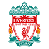

Premier League: 18
FA Cup: 7
League Cup: 8
European Cup/Champions League: 5
UEFA Cup: 3
First Division: 1900, 1905, 1921, 1922, 1946, 1963, 1965, 1972, 1975, 1976, 1978, 1979, 1981, 1982, 1983, 1985, 1987, 1989
FA Cup: 1964, 1973, 1985, 1988, 1991, 2000, 2005
League Cup: 1980, 1981, 1982, 1983, 1994, 2000, 2002, 2011
European Cup: 1976, 1977, 1980, 1983
UEFA Champions League: 2004
UEFA Cup: 1972, 1975, 2000
Logo
The most characteristic part of the logo is the drawing of the mythical “Liver Bird”, which is the symbol of the City of Liverpool. The same creature could also be seen as a decoration on Royal Liver Building in Liverpool. In the upper part of the logo the well-known Liverpool FC saying "You'll never walk alone" is printed.